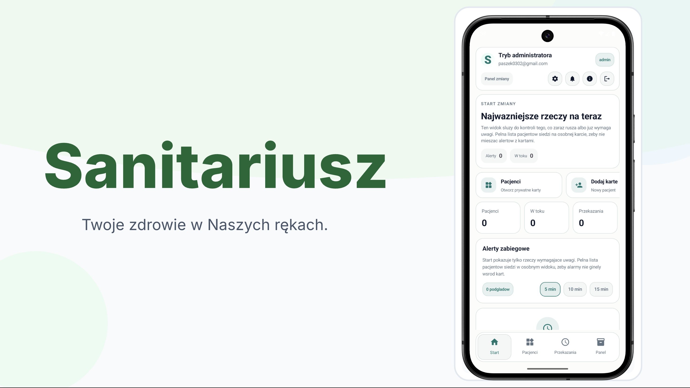

Enlarge preview01 — MOBILE APPLICATION
SanitariuszApp
A shared workspace for daily patient-care operations. Patient records, procedures and shift handovers, brought together in a cross-platform mobile app.
Explore the project
THE PROBLEM
Working in healthcare showed me how important clear information and a well-organized handover are. This project brings those daily workflows into one interface.
THE APPROACH
Kotlin and Compose Multiplatform for Android and iOS, with local persistence and Firebase Firestore synchronization. The app includes role-aware patient management, procedure tracking and administrative tools.
My focus: application development, workflow design and cross-device data synchronization.